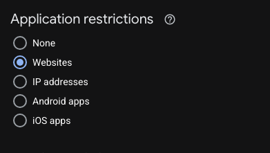
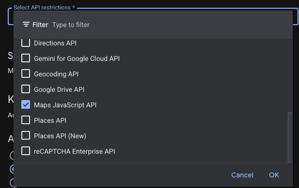
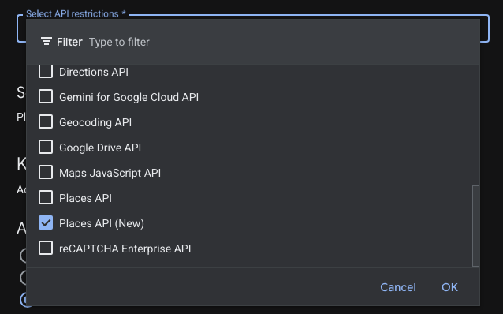

For the new {{AGENT_NAME}} website. Takes about 15 minutes.
The map on the property listings and the nearby schools and transport on each property page are provided by Google. They need two "keys" (long codes that start with AIza) from a Google account in your name. Once you send them to me I put them into the website and there is nothing more to do.
What it costs. Google gives the first 10,000 map views each month free, and the schools and transport lookups have their own free allowance. A website of your size stays well inside both, so the bill is £0. Google will still ask for a card when you sign up, because that is how they set up every account.
You will be asked to do four things:
Create the Google account for maps and add a card
Switch on the two Google services the website uses
Create Key 1 (for the map) and lock it to your website
Create Key 2 (for schools and transport) and lock it to our server
Then email me the two keys.
The Google screens look slightly different from time to time, and yours may be light rather than dark like the pictures here. The words on the buttons stay the same, so go by the words.
Part 1. Create the account and add a card
Open this address in your browser: https://console.cloud.google.com/google/maps-apis/start
Sign in with the Google account you want this to belong to. The Gmail or Google account you already use for the business is ideal, so that it stays with {{AGENT_SHORT}}.
If Google asks you to agree to its terms, choose United Kingdom as the country, tick to agree and click Agree and continue.
Google will then ask you to set up billing. Choose Business if it asks for an account type, fill in the business name and address, and enter a debit or credit card. Click Start or Submit at the end.
Google may offer a free trial or credit. You can accept it; it makes no difference.
Google may now show you a key straight away, or ask you some questions about what you are building. If it asks, you can skip or close these. If it shows you a key, click Close or Go to Google Maps Platform. We set both keys up properly in Parts 3 and 4.
Part 2. Switch on the two services
Click the three lines (the menu) at the top left of the screen, then APIs & Services, then Library.
In the search box type Maps JavaScript API and press Enter. Click on Maps JavaScript API in the results.
Click the blue Enable button. If the button says Manage instead, it is already switched on and you do not need to do anything.
Go back to the Library and search for Places API (New). Click on the one called Places API (New). Be careful to choose the one with (New) on the end, not the one called just "Places API".
Click Enable (or it already says Manage).
Part 3. Key 1: the map
Click the menu at the top left, then APIs & Services, then Credentials.
Near the top, click + Create credentials and choose API key.
Google shows "API key created" with the new key. Click Close. You can come back to the key at any time, so there is no need to copy it yet.
The new key now appears in the list under API Keys, probably called "API key 1". Click on its name to open it.
In the Name box at the top, change the name to {{AGENT_SHORT}} website map
Under Application restrictions, choose Websites:

Choose Websites
A Website restrictions section appears underneath. Click Add, type the first line below exactly, and click Done. Repeat for each line, so you end up with three:
{{DOMAIN}}/* *.{{DOMAIN}}/* *.pwdp.co.uk/*
The first two are your website. The third is the preview address the new site is on now, so the map keeps working while we finish it.
Further down, under API restrictions, choose Restrict key. Click the box that says Select APIs, tick Maps JavaScript API and nothing else, then click OK:

Maps JavaScript API ticked, nothing else
Click the blue Save button at the bottom.
Part 4. Key 2: schools and transport
This key is used by our server, not by people's browsers, so it is locked to the server's address instead of your website.
Back on the Credentials page, click + Create credentials and choose API key again. Click Close on the box that appears.
Click on the name of this second new key to open it.
Change the Name to {{AGENT_SHORT}} website server
Under Application restrictions, choose IP addresses.
Under IP address restrictions, click Add, type {{SERVER_IP}} and click Done. It should then look like this:
IP addresses chosen, with {{SERVER_IP}} added
Under API restrictions, choose Restrict key, click Select APIs, tick Places API (New) and nothing else, then click OK:

Places API (New) ticked. Not the one called just "Places API".
Click Save.
Google says the settings can take up to 5 minutes to start working, so if anything looks odd straight away, that is why.
Part 5. Send me the two keys
On the Credentials page you will now see both keys listed by the names you gave them.
Next to {{AGENT_SHORT}} website map, click Show key, then the copy button, and paste it into an email to me with the words "Map key".
Do the same for {{AGENT_SHORT}} website server and label it "Server key".
Send the email to {{REPLY_EMAIL}}.
It is fine to email the keys. Because of the restrictions above, Key 1 only works on your website and Key 2 only works from our server, so they are no use to anybody else.
If you get stuck at any point, just give me a call on {{PHONE}} and I will talk you through it.